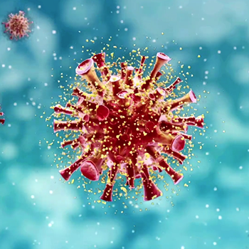

Morte de criança com covid-19 mostra ataque do vírus ao coração, diz estudo
UOL - Viva Bem
Data: 25 de agosto de 2020

Casos graves e fatais de covid-19 em crianças são muito raros. Assim, o caso de uma menina de onze anos de idade, sem problemas de saúde, mas que foi internada em estado grave e morreu devido a complicações causadas pela doença, foi analisado em detalhes por médicos do Hospital das Clínicas (HC) da Faculdade de Medicina da USP (FMUSP).
O estudo relatou, pela primeira vez, a presença de partículas do vírus da doença em células musculares cardíacas, determinando uma relação causal entre a covid-19 e a síndrome inflamatória multissistêmica pediátrica (SIM-P), um processo inflamatório grave que pode afetar diversos órgãos, inclusive o coração.
Os resultados do estudo, que contribui para entender os efeitos da doença, são descritos em artigo publicado na revista médica The Lancet Child & Adolescent Health. A SIM-P começou a ser relatada a partir de abril deste ano por médicos da Europa e dos Estados Unidos. "A síndrome é um quadro inflamatório sistêmico grave, identificado em crianças e adolescentes, que pode atingir vários órgãos, como o trato gastrointestinal, pulmões, pele e sistema nervoso central, e provocar disfunção cardíaca em casos mais graves", afirma Marisa Dolhnikoff, professora da FMUSP e primeira autora do trabalho. "Ainda não havia confirmação de que a SIM-P fosse causada pelo vírus SARS-CoV-2. O estudo des
A criança não apresentava doenças previamente existentes, e foi levada ao pronto-socorro do Instituto da Criança do HC em estado grave, apresentando desconforto respiratório, gripe, febre alta persistente e dor abdominal. "Após a entrada na UTI, o quadro evoluiu para disfunção cardíaca e choque cardiogênico em 28 horas, com necessidade de ventilação mecânica pulmonar e suporte de medicações para o sistema cardiovascular", relata a médica Juliana Ferranti, que participou do estudo. "Foi uma evolução grave da covid-19, muito rara dentro da pediatria". A confirmação da doença foi feita por um teste de PCR realizado após a morte da paciente.
Durante o atendimento, a paciente foi submetida a exames de sangue, radiografia e tomografia de tórax. "Devido a evolução clínica, que já sugeria um quadro de miocardite e choque cardiogênico, também foram feitos eletrocardiograma [ECG] e ecocardiograma [ECO] para avaliar a função cardíaca", relata Juliana. "Os exames indicaram um processo inflamatório importante, com aumento de marcadores inflamatórios, e a evolução clínica, associada aos resultados do ECG e ECO, mostrava comprometimento severo do funcionamento do coração."
Após a morte da paciente, para avaliar as alterações teciduais e os possíveis mecanismos fisiopatológicos associados à SIM-P, foi realizada a análise microscópica de tecido coletado de vários órgãos, através da autópsia minimamente invasiva guiada por ultrassom. "Nesse método, as amostras de tecido são coletadas por agulhas direcionadas aos diferentes órgãos, usando a imagem do ultrassom como guia.
Também foi feita a pesquisa de RNA viral em pulmões e coração através de exames moleculares (PCR)", descreve a professora Marisa. "Além disso, o tecido cardíaco foi analisado por microscopia eletrônica, método que permite a observação do tecido com aumento da ordem de centenas a milhares de vezes, possibilitando a avaliação de detalhes celulares e a identificação da partícula viral."
Coração comprometido.
A análise microscópica dos pulmões mostrou um quadro leve de pneumonia, causada pelo vírus SARS-CoV-2, e a presença de microtrombose pulmonar. "Essa obstrução dos vasos sanguíneos do pulmão é encontrada em um grande número de pacientes com quadro grave de covid-19", ressalta Marisa. "Neste caso, entretanto, o órgão mais comprometido pela doença foi o coração, que mostrava uma importante inflamação [miocardite], com necrose e perda de fibras cardíacas, o que levou à insuficiência cardíaca e a morte da paciente."
O exame de PCR foi positivo tanto nos pulmões como no coração, indicando a presença do vírus nesses órgãos. "A microscopia eletrônica evidenciou partículas virais em células do coração, determinando uma relação direta entre a lesão cardíaca causada pelo vírus SARS-CoV-2 e o quadro de miocardite e disfunção cardíaca", destaca a professora. "Pela primeira vez, o estudo revelou a presença do vírus em células musculares cardíacas (cardiomiócitos) de um paciente com covid-19. Além disso, o vírus também foi identificado em outras partes do coração, como células endoteliais, fibroblastos e células inflamatórias."
De acordo com Marisa, apesar da SIM-P ser bastante rara, com cerca de 1.000 casos registrados em todo o mundo, a comunidade médica alerta para a necessidade de a síndrome ser rapidamente reconhecida e tratada. "Neste estudo, a evidência de lesão cardíaca causada diretamente pelo vírus no miocárdio, levando à inflamação, necrose e falência do coração, confirma que a SIM-P é uma das formas possíveis de apresentação da covid-19 em crianças, e que o coração pode ser o órgão alvo nesses casos", aponta.
"Os estudos até o momento mostram que com a internação e o tratamento, a grande maioria das crianças com SIM-P tem uma evolução favorável e se recupera. Entretanto, os achados deste trabalho alertam para a possibilidade de sequelas cardíacas nessas crianças, que serão acompanhadas."
"Agora, pacientes com quadros sugestivos de miocardite e suspeita de covid-19 podem receber tratamentos com foco na possível lesão cardíaca que o vírus pode causar", conclui Juliana. O estudo teve a participação dos departamentos de Patologia, Pediatria, do Instituto da Criança e da Gastroenterologia da FMUSP. A investigação post-mortem foi realizada pelo Grupo de Autópsia Minimamente Invasiva do Departamento de Patologia da FMUSP, que inclui os professores Marisa Dolhnikoff, Paulo Hilário Nascimento Saldiva, Luiz Fernando Ferraz da Silva, Thais Mauad e os pesquisadores Amaro Nunes Duarte-Neto, Renata Aparecida de Almeida Monteiro, e Khallil Taverna Chaim.
A professora Elia Garcia Caldini, responsável pelo Centro Multiusuário de Microscopia Eletrônica do HC, conduziu a parte de microscopia eletrônica do estudo. "A microscopia eletrônica é importante para entender a fisiopatologia da doença porque permite localizar o vírus e, ao mesmo tempo, avaliar em profundidade o dano celular", afirma.
Os médicos pesquisadores do Instituto da Criança foram responsáveis pela assistência à paciente, pela avaliação dos dados clínicos e laboratoriais e pela avaliação genômica, com a participação dos professores Magda Carneiro-Sampaio, Werther Brunow de Carvalho e dos médicos Juliana Ferreira Ferranti, Natália Viu Degaspare, Artur Figueiredo Delgado, Carolina Montanari Fiorita, Gabriela Nunes Leal, Regina Maria Rodrigues. O estudo molecular (PCR) foi conduzido pelo pelo professor João Renato Rebello Pinho e a pesquisadora Michele Soares Gomes-Gouvêa, do Departamento de Gastroenterologia.
Referência: https://www.uol.com.br/vivabem/noticias/redacao/2020/08/25/morte-de-crianca-com-covid-19-mostra-ataque-do-virus-ao-coracao-diz-estudo.htm